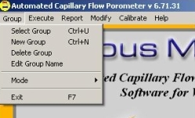
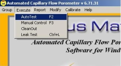
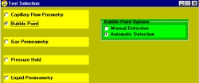
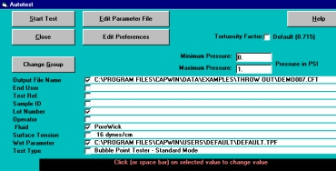
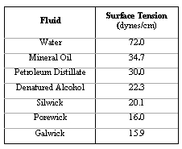
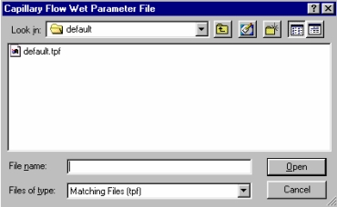
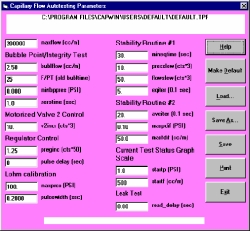
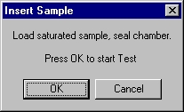
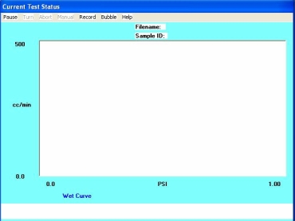
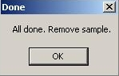

-

Select the Group menu option.
Choose Select Group to use an existing group.
Choose New Group to create a new group.
-

From the CAPWIN Main Screen, select the AutoTest option from the Execute menu.
If your machine includes a compression option, you will be prompted to enter the compression pressure of the system first which consists of the piston air pressure and the compressive force on the sample.
Once these pressures have been entered, the Autotest screen will appear for bubble testing.

Select the Type of Test option at the bottom of the screen.
If the test shown is incorrect, click on Type of Test. The Test Selection screen appears. Select Bubble Point from the yellow list and Automatic Detection from the green list. Click OK.
You are returned to the Autotest screen.

Select Output File Name.
If the path and file shown are correct, fill in the End User, Test Reference, Sample ID, Lot_Number, Operator and Fluid which are the labels of identification for the sample being used.
If the file shown is incorrect or to create a new file, click on Output File Name. The Output Data File selector appears. (The file selector appears as shown if CAPWIN was installed with the default path. If you opted for a different path, locate the Capwin folder and select it.) You can either select an existing file or create a new file under a new folder. After hitting OK you will be returned to the Autotest screen.
End User, Test Reference, Sample ID, Lot_Number, Operator and
Fluid are all optional and may be left blank if so desired. These items are printed on the reports for information and identification purposes.
Although
Fluid is optional, it is recommended that it not be left blank.
The Surface Tension option will be discussed next in further detail.

Surface Tension is used by the CAPWIN program to perform calculations. Be sure the surface tension displayed is correct for the fluid you are using. Enter the correct value in dynes/cm if it is not. This value is not automatically updated if you change Fluid. See page 79, Pore Size Range Table, for more information.

Wet Curve Testing Parameters File displays the name of the parameter file being used for the test.
Check to see if the path and file shown are the ones you want to use to obtain parameters for the Wet Curve part of the test .
If you wish to select another file or create a new file, click on the Wet Curve Testing Parameters File box.
The WET Parameter File selection screen appears. The file selector appears as shown if CAPWIN was installed with the default path. If you opted for a different path, locate the Capwin folder and select it. To select an existing file, click on the folder containing the file. Select the file in the file list. Click OK.
To choose a file, click on a file in the file list. Click OK. You are returned to the Autotest screen. Click the Edit Parameter File button at the top of the Autotest screen.

The
Autotesting Parameters screen appears.
(For a complete description of the options available on this screen and for further discussion about customizing parameter files go to the section on
Editing Auto Parameters)
After making changes, click the
Save As ... button. You are returned to the file selector shown in Step 7. Type a new file name in the text box in the file selector screen. Click
OK. You are returned to the
Autotesting Parameters screen. Click
Exit on the
Autotesting Parameters screen. You are returned to the
Autotest screen.
Click the Start Test button at the top of the Autotest screen.
If the data file you have chosen already exists, you will see a screen similar to the one shown at right.
Clicking Yes continues the test and overwrites the existing data in the file with the new test data.
Clicking No returns to the Autotest screen.

A message box prompts you to insert the saturated sample.
Insert the sample as described below then click OK to begin the test. (For complete information on installing samples, see page 78, Installing the Sample.
Saturate the sample and place it in the bottom of the sample chamber. Make sure it completely covers the O ring. If it does not, place one of the small-sample adapter plates in the bottom of the chamber, place the sample on the smaller O ring of the adapter, and place the matching adapter plate on top of the sample. The liquid should completely wet the sample (the contact angle must be zero). If the sample is not completely wetted, Capwin may detect a false bubble point larger than the actual maximum pore size in the sample.
Place the thick spacing insert in the chamber. It should press far enough into the chamber so that the O ring on its side will pass below the upper rim of the chamber, but not so far that the entire insert is below the upper rim.
Screw the chamber cap onto the chamber and hand-tighten to the point where the O ring on the top of the spacing insert is compressed against the chamber cap.
Caution: Over-tightening the cap can cause the cap and spacing insert to seize. If this happens, the sample chamber must be replaced. Over-tightening may also damage the sample.

After installing the sample and clicking OK, a Current Test Status screen specific to the type of test appears. A box appears in the center of the screen prompting the user to click OK to start the test.

The test runs: the bubble point pressure is found, the pressure is released from the system, and a message box informs the user that the sample may be removed.
Click OK to return to the CAPWIN Main Screen.